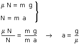

Evidentemente el carrito deberá moverse horizontalmente hacia hacia la derecha con aceleración. El bloque, que se mantiene inmóvil respecto al carrito, también se moverá horizontalmente con la misma aceleración
¿Qué fuerza le produce la aceleración del bloque? No hay más que una candidata: la reacción normal de la pared vertical del carrito
¿Y porque no se cae el bloque? pues porque le sujeta el rozamiento con la pared vertical del carrito. En el caso límite esta fuerza de rozamiento valdrá: μN
|
 |

Si el coeficiente de rozamiento fuera 0.1 la aceleración del carrito tendría que ser 98 m/s2. Este valor es altísimo así que este curioso fenómeno no se observará en la vida corriente